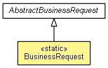

org.waarp.openr66.client
Class BusinessRequest
java.lang.Object
 org.waarp.openr66.client.AbstractBusinessRequest
org.waarp.openr66.client.BusinessRequest
org.waarp.openr66.client.AbstractBusinessRequest
org.waarp.openr66.client.BusinessRequest
- All Implemented Interfaces:
- Runnable
public class BusinessRequest
- extends AbstractBusinessRequest

class for direct Business Request call
- Author:
- Frederic Bregier
| Methods inherited from class java.lang.Object |
clone, equals, finalize, getClass, hashCode, notify, notifyAll, toString, wait, wait, wait |
DEFAULT_CLASS
public static final String DEFAULT_CLASS
- Default class
- See Also:
- Constant Field Values
BusinessRequest
public BusinessRequest(NetworkTransaction networkTransaction,
R66Future future,
String remoteHost,
BusinessRequestPacket packet)
main
public static void main(String[] args)
Copyright © 2009-2013 Waarp. All Rights Reserved.